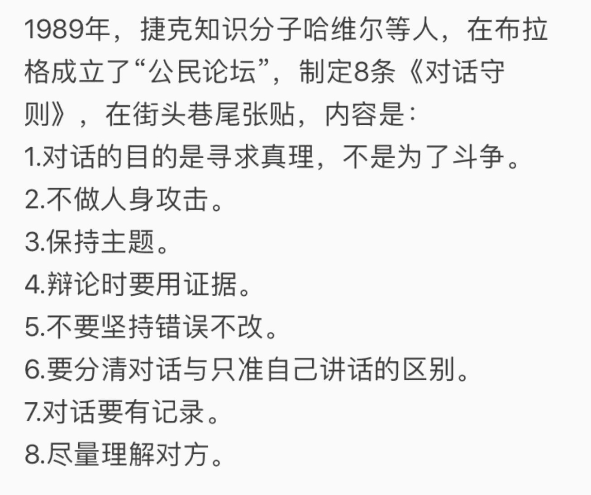
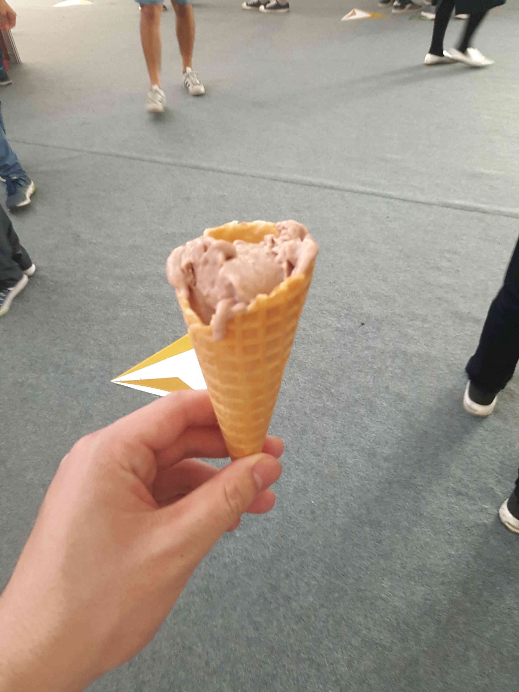
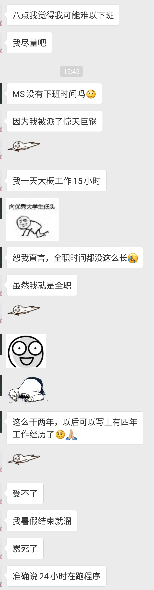
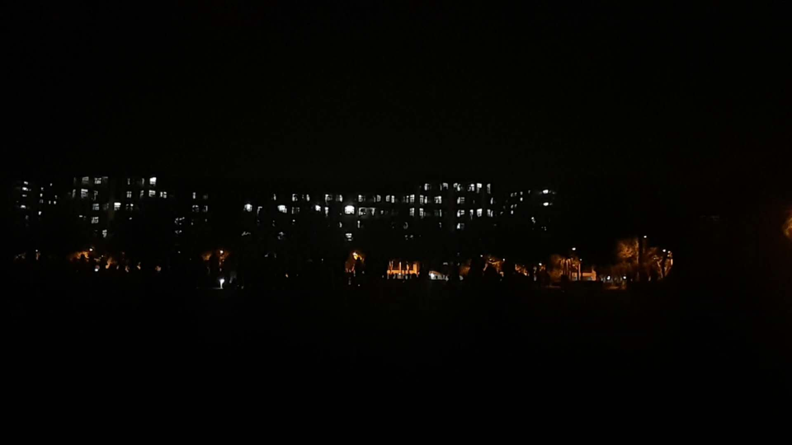

Bing16
当我在神游时，我在想些什么。
确实，如果没有亲身经历过，是体会不到那种喜悦、那种难受的心情。进球的那一刻，我们是站起来了——不约而同地；还有点球最后一刻的沉默、球员们在球门前抱头哭的情景，是难以用文字或影片表达出来的。这场比赛背后的努力与坚持、期待与失落，除了他们自己，旁人也只是推测。但仅是推测的，也令人肃然起敬。无论如何，汽车牛逼！理想仍在，脚步不停。
—— 2018-04-19 16:44
"我在实验室" "今晚有课" "我在公司" "今晚有课" —— 这或许就是人与人之间的差异吧。
—— 2018-04-20 09:00

园子里的鸟儿啊，你也勤勉如人吗。叽喳的叫声是否也是为了努力生存？
—— 2018-04-20 11:30
突然感受到外联真是辛苦啊。临近ddl各方却无法给出个保证，难受啊难受。
—— 2018-04-21 01:01
雨季来了。
—— 2018-04-21 08:35
“月亮在白莲花般的白云里穿行，晚风里吹来欢乐的歌声。”
—— 2018-04-22 12:05
可能凉凉了，一事无成。
—— 2018-04-24 20:53

截自硕导票圈。
—— 2018-04-25 08:54
绝望啊，老天救我，救我啊老天。
—— 2018-04-26 22:23
确实值得警惕，必须停止了。
—— 2018-04-27 11:23

液氮冰淇淋。
—— 2018-04-28 14:28
最担心被抛弃，最担心无所适从。一觉醒来后发现热闹都是他们的，一切从空而来，将归于空，而欢乐只是孤独者的自愈。宇宙万物生于混沌而归于混沌，我只是沧海一粟，渺小于群星璀璨之中，留下的印迹不足以谈。而欢愉不过空寂的前奏罢了，所作所为似乎是虚度了时光。
—— 2018-04-29 06:20
努力而没有回报是什么感受 :) 别，还是做自己，一切为了自己而不是为了他人的评价。
—— 2018-04-29 06:38
和孟队交流后确实颇多感受。“清华足够大，给你无限可能。”再次听到这句话后，我忽然想起一开始时的踌躇满志，忽然想起自己的初心。而如今自己又在做些什么呢。孟队说目标很重要。是的，确实很重要，而我在很长时间内忘了自己的目标，当然，也有些眼高手低。但总要有些目标。
—— 2018-04-29 21:57
美院大佬啊，你望着窗外忘得出奇，那嫩绿的树叶在阳光的照射下显得生机盎然；
美院大佬啊，你举止言行都展现了别样的气质，那未知命运将把我们各自引向什么地方呢？
—— 2018-05-03 09:30

我是谁，我在哪里，我在做什么？
—— 2018-05-04 15:50
忏悔录：我真是对不起我的兄弟姐妹们（那种意义上的兄弟姐妹），对不起我的儿女子孙们（也是那种意义上的），时至今日我竟然还是弄不清我究竟如何为我。人的意识究竟是否独立于物质而存在，还是物质决定着意识的存在。这么一来，我也对不起那些与我同一肉体的意识们。以当下之名，为他日之意识尽自己当下之义务吧。
—— 2018-05-07 07:33
你是否想起了谁？嗯，是的。
—— 2018-05-07 12:10
最近喜欢听《东方红》，不只是喜欢曲子本身，更是对理想领导人的尊敬。
—— 2018-05-09 13:18

和一群大四学长学姐们坐在紫操看他们本科的最后一次熄灯（或许也是我的，这不可得知）。
—— 2018-05-10 23:10
生于这个数据化的时代，我们的隐私究竟何在?关于之前李的zz言论，我曾说过，反对的大众大多本质上不对以隐私换取便利的行为反感，因为这也算是一种交换行为，但问题是用户需要的是透明度和选择权。我想，霸道的协议和“垄断性”的单方面条件是无人能够接受的。
—— 2018-05-12 07:41
生活究竟通往何方，未来你究竟在何处？
—— 2018-05-12 23:46
开源精神与共产主义？
—— 2018-05-14 09:22
是的，必须停止了，一切都结束了。无论如何，既已往，心勿殇，苍茫大地继如往。
—— 2018-05-23 14:24
毫无希望的人生。
—— 2018-05-31 23:58
宠辱若惊之人难成大事。
—— 2018-06-03 22:14
小时候谁都觉得自己得未来闪闪发光不是吗？
—— 2018-06-03 22:14
还会有未来吗？我不知道。萎枯的花朵是否还能重生，迷途的羔羊是否能走回前列？未来啊你究竟在何方？是坦荡的大道，还是迷雾重重的荒郊？是无尽的征程，还是断壁残戈？生啊，你活得混沌；死啊，你逝如一瞬。
—— 2018-06-04 07:35
相逢又相别，相识又相忘。人生既已如此？
—— 2018-06-04 12:36
待到用时才发现没准备什么好看的个人照:(
—— 2018-06-06 20:00
亲密关系？不存在的！:(
—— 2018-06-08 23：23
心情烦躁。
—— 2018-06-09 01:15
哇！当时那个人现在要去当老师了？那些人儿啊，现在在哪里。我又在哪里，颓废地准备着考试。民生各有所乐兮，民生各有所业兮。
—— 2018-06-11 19:18
哇，多久没孤独了，只是寂寞。
—— 2018-06-12 21:06
混迹于各种才人之间，自行惭愧。
—— 2018-06-13 17:12
“远离不可逆”但有什么是可逆的呢？蝴蝶煽动翅膀造成了海啸，发生过的时期无论如何影响永存。但有些不可逆的时期还是不做为好。
—— 2018-06-16 14:50
正如冯老师所强调的，这是最好的时代，这是最坏的时代，而我们就是在这样的时代生活着。光阴的故事带走曾经的芳华，一些美好的往事隐隐于世、忘乎人间。有谁能说这是历史的倒退呢，其他的一切都在高速向前行驶，就如同那飞速的高铁跨越平野江河，但就是有那么一些东西，仿佛退回到了从前。回忆世纪初的浪潮，回忆改革初的春天，有些东西就真的已经过去了，连同着那时候的人和物。
—— 2018-06-19 00:26
一切都结束了，如果熊熊烈火烧尽后的原野，只留下无际的灰烬和那从零星星火冒出的白烟。
—— 2018-06-20 22:19
只要人类拥有改变未来的能力，人类就不可能预测未来。人类不能预测未来，除非放弃改变未来的能力，即使是另一种形式上的放弃。
—— 2018-06-22 12:37
从来就没有什么奇迹，必然的自然属于必然。没有努力做的事情自然难以成功。
—— 2018-06-22 12:37
凉凉的生活还是要有一点希望的不是吗/手动微笑。
—— 2018-06-23 17:42
我竟觉得那人那么像你，我怕不是疯了。
—— 2018-06-26 15:47
凭什么你天生丽质又荣获功与名？
—— 2018-06-26 18:33